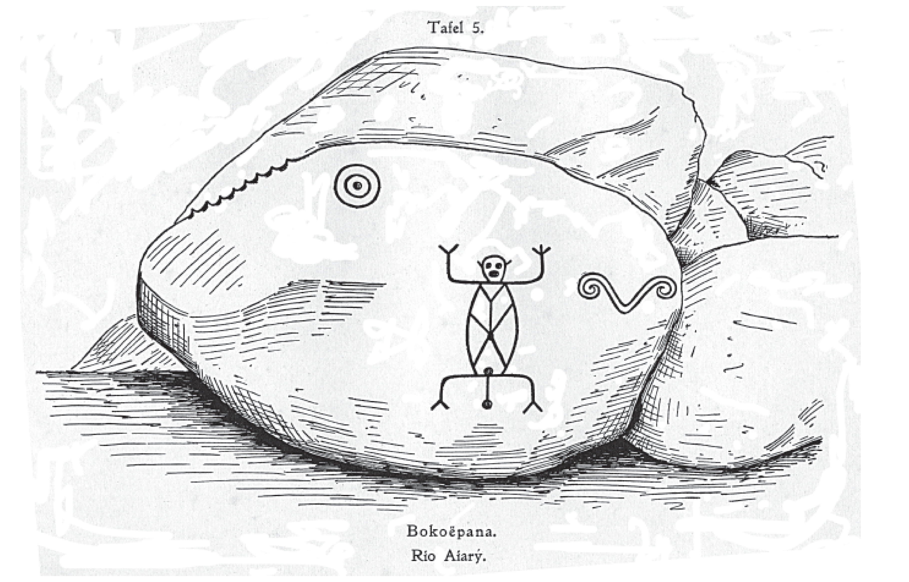
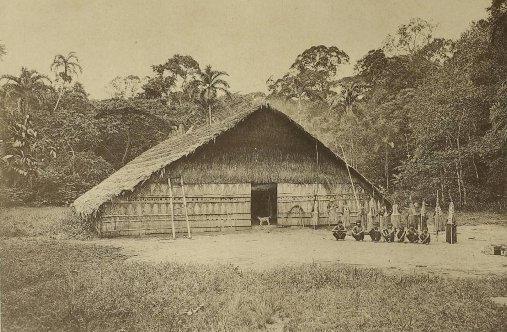

1.1.1
Linha do Tempo Baniwa e Koripako
Do tempo primordial às políticas linguísticas, educacionais e territoriais contemporâneas.
Antes do contato
∞ — c. 1690
Tempo da violência
1616 — 1950
Novas missões
1914 — anos 1970
Estado direitos e educação
1970 — 2001
Protagonismo contemporâneo
2000 — 2026
Selecione um círculo para ler o acontecimento correspondente.

